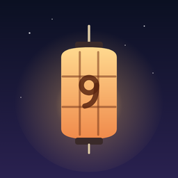

Help and contact for the game on iPhone, iPad, Android and Steam.
Found a bug or have a question? Write to us and we usually reply within 2 working days. Please include your device model.
Sorularınız ve hata bildirimleri için bize e-posta ile yazabilirsiniz: meltembkr@gmail.com. Oyun İngilizce açılır; Türkçe için ana menüdeki veya oyun ekranındaki dil düğmesine dokunun. Seviyeler çözdükçe sırayla açılır; yeni bölüm, önceki bölümdeki 30 bulmacanın 20'si çözülünce açılır. Her bulmaca hata ve ipucu sayısına göre 3 yıldıza kadar kazandırır. Günün Bulmacası her gün yenilenir. İlerlemeniz otomatik olarak yalnızca cihazınızda saklanır. Müziği oyun ekranındaki müzik düğmesiyle kapatabilirsiniz; hata sınırı ve süre Ayarlar'dan kapatılabilir. Uygulama içi satın alma yoktur. Telefon ve tablet sürümlerinde bulmacalar arasında ara sıra reklam gösterilir; ekstra ipucu veya üç hatadan sonra devam etmek için isteğe bağlı video izleyebilirsiniz. Steam sürümü reklamsızdır. Oyun internetsiz oynanır.